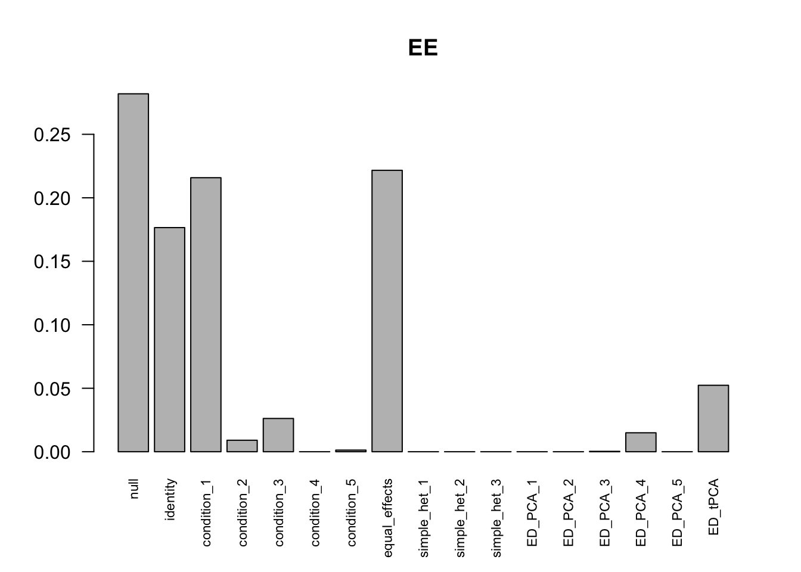
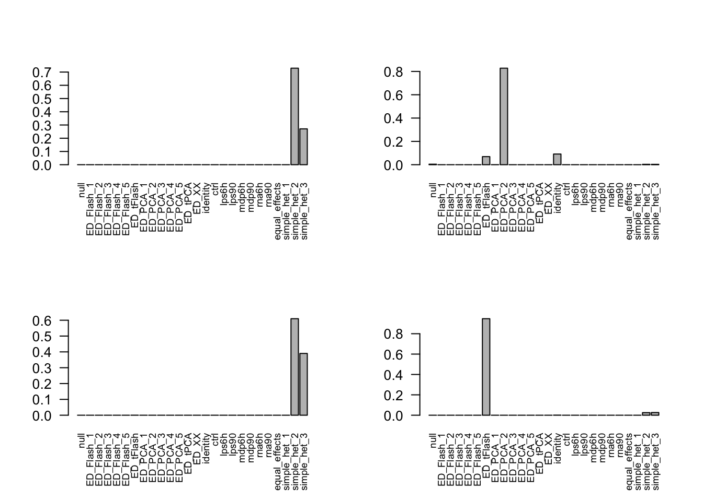

Immune Posterior Check
Yuxin Zou
2017-12-04
Last updated: 2017-12-10
Code version: d515b4d
Setup
library(mashr)Loading required package: ashrlibrary(corrplot)corrplot 0.84 loadedlibrary(dplyr)
Attaching package: 'dplyr'The following objects are masked from 'package:stats':
filter, lagThe following objects are masked from 'package:base':
intersect, setdiff, setequal, unionlibrary(stringr)
source('~/Documents/GitHub/mashr-stephens/R/likelihoods_scaleddata.R')
source('~/Documents/GitHub/mashr-stephens/R/RcppExports.R')
source('~/Documents/GitHub/mashr-stephens/R/set_data.R')
source('~/Documents/GitHub/mashr-stephens/R/posterior.R')
source('~/Documents/GitHub/mashr-stephens/R/posterior_common_cov.R')
source('~/Documents/GitHub/mashr-stephens/R/posterior_lowmem.R')Let mash_posterior function returns posterior weights as well:
mash_compute_posterior_matrices_weights = function(g, data, pi_thresh = 1e-10, algorithm.version = c("Rcpp", "R"), A=NULL ){
if (!is.null(A) && algorithm.version=='Rcpp'){
stop("FIXME: not implemented")
}
if(class(g)=="mash"){
alpha = g$alpha
g = g$fitted_g
if(alpha != data$alpha){
stop('The alpha in data is not the one used to compute the mash model.')
}
}
else{
message('Warning: Please make sure the alpha in data is consistent with the `alpha` used to compute the fitted_g.')
}
xUlist = expand_cov(g$Ulist,g$grid,g$usepointmass)
lm_res = calc_relative_lik_matrix(data, xUlist)
which.comp = (g$pi > pi_thresh)
posterior_weights = compute_posterior_weights(g$pi[which.comp], lm_res$lik_matrix[,which.comp])
posterior_matrices = compute_posterior_matrices(data, xUlist[which.comp],
posterior_weights,
algorithm.version, A=A)
if ((!all(data$Shat_alpha == 1)) && (algorithm.version=='Rcpp')) {
message("FIXME: 'compute_posterior_matrices' in Rcpp does not transfer EZ to EE")
## Recover the scale of posterior(Bhat)
posterior_matrices$PosteriorMean = posterior_matrices$PosteriorMean * data$Shat_alpha
posterior_matrices$PosteriorSD = posterior_matrices$PosteriorSD * data$Shat_alpha
}
return(list(posterior_weights = posterior_weights,
posterior_matrices = posterior_matrices))
}Simulated data
Shat equal data R = 5
- Fit
mashmodel based ondata\(\rightarrow\) estimated weights \(\pi\) - Obtain posterior mean for
datausing themashmodel \(\rightarrow\) posterior weights for the covariance structures - Check whether the posterior weights for the covariance structures are similar as in
mashmodel.
mash model:
set.seed(1)
simdata.equal = simple_sims(500,5,0.5)
# set mash data
TestdataZ.equal = set_mash_data(simdata.equal$Bhat, simdata.equal$Shat, alpha=1)
# center
TestdataZ.equal.center = set_mash_data(apply(as.matrix(TestdataZ.equal$Bhat), 2, function(x) x - mean(x)))
# canonical cov
U.c.equal = cov_canonical(TestdataZ.equal)
# data_driven
m.1by1.Z.equal = mash_1by1(TestdataZ.equal, alpha=1)
strong.Z.equal = get_significant_results(m.1by1.Z.equal,0.05)
U.pca.Z.equal = cov_pca(TestdataZ.equal.center,5,strong.Z.equal)
U.ed.Z.equal = cov_ed(TestdataZ.equal, U.pca.Z.equal, strong.Z.equal)
U.m.Z.equal = mash(TestdataZ.equal, c(U.c.equal, U.ed.Z.equal)) - Computing 2000 x 257 likelihood matrix.
- Likelihood calculations took 0.15 seconds.
- Fitting model with 257 mixture components.
- Model fitting took 0.61 seconds.
- Computing posterior matrices.
- Computation allocated took 0.01 seconds.FIXME: 'compute_posterior_matrices' in Rcpp does not transfer EZ to EEbarplot(get_estimated_pi(U.m.Z.equal), las = 2, cex.names = 0.7, main='EZ')Posterior:
Post = mash_compute_posterior_matrices_weights(U.m.Z.equal, TestdataZ.equal)FIXME: 'compute_posterior_matrices' in Rcpp does not transfer EZ to EEU.m.Z.equal$result = Post$posterior_matrices
posterior_weights = Post$posterior_weightsFor every sample, the posterior weights for the covariance structures:
Weight = matrix(0,nrow=nrow(U.m.Z.equal$result$PosteriorMean),17)
Weight[,1] = posterior_weights[,1]
ind = as.logical(str_count(colnames(posterior_weights), "ED_PCA_1"))
Weight[,2] = apply(posterior_weights[,ind, drop=FALSE], 1, sum)
ind = as.logical(str_count(colnames(posterior_weights), "ED_PCA_2"))
Weight[,3] = apply(posterior_weights[,ind, drop=FALSE], 1, sum)
ind = as.logical(str_count(colnames(posterior_weights), "ED_PCA_3"))
Weight[,4] = apply(posterior_weights[,ind, drop=FALSE], 1, sum)
ind = as.logical(str_count(colnames(posterior_weights), "ED_PCA_4"))
Weight[,5] = apply(posterior_weights[,ind, drop=FALSE], 1, sum)
ind = as.logical(str_count(colnames(posterior_weights), "ED_PCA_5"))
Weight[,6] = apply(posterior_weights[,ind, drop=FALSE], 1, sum)
ind = as.logical(str_count(colnames(posterior_weights), "ED_tPCA"))
Weight[,7] = apply(posterior_weights[,ind, drop=FALSE], 1, sum)
ind = as.logical(str_count(colnames(posterior_weights), "identity"))
Weight[,8] = apply(posterior_weights[,ind, drop=FALSE], 1, sum)
ind = as.logical(str_count(colnames(posterior_weights), "condition_1"))
Weight[,9] = apply(posterior_weights[,ind, drop=FALSE], 1, sum)
ind = as.logical(str_count(colnames(posterior_weights), "condition_2"))
Weight[,10] = apply(posterior_weights[,ind, drop=FALSE], 1, sum)
ind = as.logical(str_count(colnames(posterior_weights), "condition_3"))
Weight[,11] = apply(posterior_weights[,ind, drop=FALSE], 1, sum)
ind = as.logical(str_count(colnames(posterior_weights), "condition_4"))
Weight[,12] = apply(posterior_weights[,ind, drop=FALSE], 1, sum)
ind = as.logical(str_count(colnames(posterior_weights), "condition_5"))
Weight[,13] = apply(posterior_weights[,ind, drop=FALSE], 1, sum)
ind = as.logical(str_count(colnames(posterior_weights), "equal_effects"))
Weight[,14] = apply(posterior_weights[,ind, drop=FALSE], 1, sum)
ind = as.logical(str_count(colnames(posterior_weights), "simple_het_1"))
Weight[,15] = apply(posterior_weights[,ind, drop=FALSE], 1, sum)
ind = as.logical(str_count(colnames(posterior_weights), "simple_het_2"))
Weight[,16] = apply(posterior_weights[,ind, drop=FALSE], 1, sum)
ind = as.logical(str_count(colnames(posterior_weights), "simple_het_3"))
Weight[,17] = apply(posterior_weights[,ind, drop=FALSE], 1, sum)
colnames(Weight) = c('null', 'ED_PCA_1','ED_PCA_2','ED_PCA_3','ED_PCA_4','ED_PCA_5','ED_tPCA',
'identity','condition_1', 'condition_2','condition_3','condition_4','condition_5',
'equal_effects', 'simple_het_1', 'simple_het_2', 'simple_het_3')
row.names(Weight) = row.names(U.m.Z.equal$result$PosteriorMean)Identify the covariance structure with the max posterior weight for each sample:
Freqe = apply(Weight,1, which.max)
Da = data.frame(id = 1:length(Freqe), Freq = Freqe)
Da_summary = Da %>% group_by(Freq) %>% summarise(Total=n())
x = Da_summary$Total
names(x) = colnames(Weight)[Da_summary$Freq]
barplot(x, las = 2, cex.names = 0.7)The posterior weights for the covariance structures have similar pattern to the weights in mash model.
Simulate Shat different among samples, same among conditions
set.seed(1)
simdata.diff = simple_sims(500, 5, rep(c(0.5,0.4,5,1,1), 400))
simdata.diff$z = simdata.diff$Bhat/simdata.diff$Shat
# set mash data
TestdataBeta.diff = set_mash_data(Bhat=simdata.diff$Bhat,
Shat=simdata.diff$Shat,
alpha = 0)
# Create covariance matrices
# center
TestdataZ.diff.center = set_mash_data(Bhat = apply(as.matrix(simdata.diff$z), 2, function(x) x - mean(x)), alpha=0)
# canonical cov
U.c.diff = cov_canonical(TestdataZ.diff.center)
# data_driven
m.1by1.Z.diff = mash_1by1(TestdataBeta.diff, alpha=1)
strong.Z.diff = get_significant_results(m.1by1.Z.diff,0.05)
U.pca.Z.diff = cov_pca(TestdataZ.diff.center,5,strong.Z.diff)
U.ed.beta.diff = cov_ed(TestdataBeta.diff, U.pca.Z.diff, strong.Z.diff)
U.m.beta.diff = mash(TestdataBeta.diff, c(U.c.diff, U.ed.beta.diff)) - Computing 2000 x 337 likelihood matrix.
- Likelihood calculations took 0.60 seconds.
- Fitting model with 337 mixture components.
- Model fitting took 0.80 seconds.
- Computing posterior matrices.
- Computation allocated took 0.09 seconds.barplot(get_estimated_pi(U.m.beta.diff), las = 2, cex.names = 0.7, main='EE')
Post = mash_compute_posterior_matrices_weights(U.m.beta.diff, TestdataBeta.diff)
U.m.beta.diff$result = Post$posterior_matrices
posterior_weights = Post$posterior_weightsFreqe = apply(Weight,1, which.max)
Da = data.frame(id = 1:length(Freqe), Freq = Freqe)
Da_summary = Da %>% group_by(Freq) %>% summarise(Total=n())
x = Da_summary$Total
names(x) = colnames(Weight)[Da_summary$Freq]
barplot(x, las = 2, cex.names = 0.7)The posterior weights for the covariance structures have similar pattern to the weights in mash model.
Immune Data
- Fit
mashmodel based onnull data\(\rightarrow\) estimated weights \(\pi\) - Obtain posterior mean for
null datausing themashmodel \(\rightarrow\) posterior weights for the covariance structures; Obtain posterior mean formax datausing themashmodel \(\rightarrow\) posterior weights for the covariance structures - Check whether the posterior weights for the covariance structures are similar as in
mashmodel.
data = readRDS('~/Documents/GitHub/mash-application-immune/data/ImmuneQTLSummary.4MASH.rds')
data$max$se = data$max$beta/data$max$z
data$null$se = data$null$beta / data$null$z
V = cor(data$null$z[which(apply(abs(data$null$z),1, max) < 2),])Posterior on null set
mash_data = set_mash_data(Bhat = data$null$beta,
Shat = data$null$se,
alpha=1,
V = V)
resEZ = readRDS('~/Documents/GitHub/mash-application-immune/output/ImmuneEZ.V1.center.mash_model.K10.P5.rds')
Post = mash_compute_posterior_matrices_weights(resEZ, mash_data)FIXME: 'compute_posterior_matrices' in Rcpp does not transfer EZ to EEresEZ$result = Post$posterior_matrices
posterior_weights = Post$posterior_weights
barplot(get_estimated_pi(resEZ), las = 2, cex.names = 0.7)
Freqe = apply(Weight,1, which.max)
Da = data.frame(id = 1:length(Freqe), Freq = Freqe)
Da_summary = Da %>% group_by(Freq) %>% summarise(Total=n())
Da_summary# A tibble: 10 x 2
Freq Total
<int> <int>
1 1 187216
2 4 20
3 7 193
4 8 5698
5 9 6
6 15 35
7 21 2
8 23 126
9 25 1
10 26 4x = Da_summary$Total
names(x) = colnames(Weight)[Da_summary$Freq]
barplot(x, las = 2, cex.names = 0.7)The number of genes with high posterior weights on equal_effects are small.
common = Reduce(intersect, list(get_significant_results(resEZ, conditions=1),
get_significant_results(resEZ, conditions=2),
get_significant_results(resEZ, conditions=3),
get_significant_results(resEZ, conditions=4),
get_significant_results(resEZ, conditions=5),
get_significant_results(resEZ, conditions=6),
get_significant_results(resEZ, conditions=7)))
PM.sign = sign(resEZ$result$PosteriorMean[common,])
all(PM.sign - PM.sign[,1] == 0)[1] TRUEThere is no qualitative interaction cases in the null set.
Posterior on max set
mash_data = set_mash_data(Bhat = data$max$beta,
Shat = data$max$se,
alpha=1,
V = V)
resEZ = readRDS('~/Documents/GitHub/mash-application-immune/output/ImmuneEZ.V1.center.mash_model.K10.P5.rds')
Post = mash_compute_posterior_matrices_weights(resEZ, mash_data)FIXME: 'compute_posterior_matrices' in Rcpp does not transfer EZ to EEresEZ$result = Post$posterior_matrices
posterior_weights = Post$posterior_weightsFreqe = apply(Weight,1, which.max)
Da = data.frame(id = 1:length(Freqe), Freq = Freqe)
Da_summary = Da %>% group_by(Freq) %>% summarise(Total=n())
Da_summary# A tibble: 11 x 2
Freq Total
<int> <int>
1 1 12003
2 4 90
3 7 1470
4 8 6695
5 9 24
6 12 11
7 15 640
8 21 52
9 23 459
10 25 18
11 26 23x = Da_summary$Total
names(x) = colnames(Weight)[Da_summary$Freq]
barplot(x, las = 2, cex.names = 0.7)There are some genes with high posterior weights on ED_tFlash and identity.
Posterior weights for the 4 genes have effects in different directions in different conditions, among the eQTLs that significant among all treatments:
common = Reduce(intersect, list(get_significant_results(resEZ, conditions=1),
get_significant_results(resEZ, conditions=2),
get_significant_results(resEZ, conditions=3),
get_significant_results(resEZ, conditions=4),
get_significant_results(resEZ, conditions=5),
get_significant_results(resEZ, conditions=6),
get_significant_results(resEZ, conditions=7)))
par(mfrow=c(2,2))
for(i in c(3052, 4156, 4303, 4726)){
barplot(Weight[common,][i, ], las = 2, cex.names = 0.7, main=row.names(Weight[common])[i])
}
par(mfrow=c(1,1))Session information
sessionInfo()R version 3.4.3 (2017-11-30)
Platform: x86_64-apple-darwin15.6.0 (64-bit)
Running under: macOS High Sierra 10.13.2
Matrix products: default
BLAS: /Library/Frameworks/R.framework/Versions/3.4/Resources/lib/libRblas.0.dylib
LAPACK: /Library/Frameworks/R.framework/Versions/3.4/Resources/lib/libRlapack.dylib
locale:
[1] en_US.UTF-8/en_US.UTF-8/en_US.UTF-8/C/en_US.UTF-8/en_US.UTF-8
attached base packages:
[1] stats graphics grDevices utils datasets methods base
other attached packages:
[1] stringr_1.2.0 dplyr_0.7.4 corrplot_0.84 mashr_0.2-4 ashr_2.1-27
loaded via a namespace (and not attached):
[1] Rcpp_0.12.14 compiler_3.4.3
[3] git2r_0.19.0 plyr_1.8.4
[5] bindr_0.1 iterators_1.0.8
[7] tools_3.4.3 digest_0.6.12
[9] evaluate_0.10.1 tibble_1.3.4
[11] lattice_0.20-35 pkgconfig_2.0.1
[13] rlang_0.1.2 Matrix_1.2-12
[15] foreach_1.4.3 yaml_2.1.14
[17] parallel_3.4.3 mvtnorm_1.0-6
[19] bindrcpp_0.2 knitr_1.17
[21] REBayes_0.85 rprojroot_1.2
[23] grid_3.4.3 glue_1.1.1
[25] R6_2.2.2 rmarkdown_1.7
[27] rmeta_2.16 magrittr_1.5
[29] backports_1.1.1 codetools_0.2-15
[31] htmltools_0.3.6 MASS_7.3-47
[33] assertthat_0.2.0 stringi_1.1.5
[35] Rmosek_8.0.69 pscl_1.5.2
[37] doParallel_1.0.11 truncnorm_1.0-7
[39] SQUAREM_2017.10-1 ExtremeDeconvolution_1.3This R Markdown site was created with workflowr